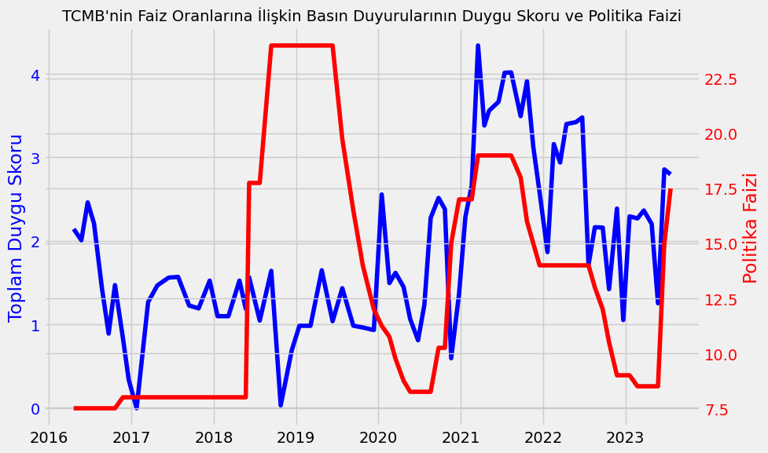
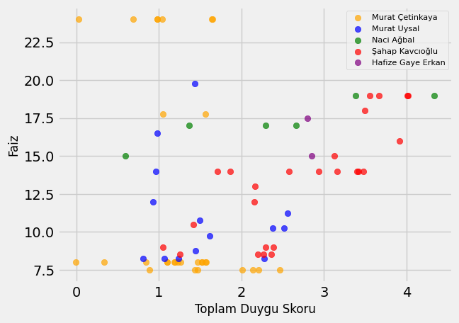

Türkiye Cumhuriyet Merkez Bankası’nın (TCMB) açıkladığı politika faizinin yanında verdiği mesaj da dikkate alınıp takip edilmektedir. Bu çalışmada, TCMB’nin faiz kararlarını açıkladığı gün yayımladığı Faiz Oranlarına İlişkin Basın Duyurusu metinlerinin duygu analizini yapacağız ve politika faizleri ile olan ilişkisine bakacağız.
Kütüphaneler
from bs4 import BeautifulSoup
import requests
import time
import pandas as pd
from datetime import datetime, timedelta
import nltk
# nltk.download()
from nltk.sentiment.vader import SentimentIntensityAnalyzer
import matplotlib.pyplot as plt
plt.style.use('fivethirtyeight')Veri Seti
Veri setinde 5 Merkez Bankası başkanı yer alacak: Murat Çetinkaya, Murat Uysal, Naci Ağbal, Şahap Kavcıoğlu ve Hafize Gaye Erkan.
TCMB’nin web sitesinden web kazıma yolu ile tüm metinleri çekerek başlayabiliriz.
URL’leri bir diziye aktaralım. Pek önemi olmamamakla beraber URL’lerin en yeniden en eskiye doğru sıralandığını belirtmek isterim.
url_metin = [
'https://www.tcmb.gov.tr/wps/wcm/connect/EN/TCMB+EN/Main+Menu/Announcements/Press+Releases/2023/ANO2023-25',
'https://www.tcmb.gov.tr/wps/wcm/connect/EN/TCMB+EN/Main+Menu/Announcements/Press+Releases/2023/ANO2023-22',
'https://www.tcmb.gov.tr/wps/wcm/connect/EN/TCMB+EN/Main+Menu/Announcements/Press+Releases/2023/ANO2023-20',
'https://www.tcmb.gov.tr/wps/wcm/connect/EN/TCMB+EN/Main+Menu/Announcements/Press+Releases/2023/ANO2023-17',
'https://www.tcmb.gov.tr/wps/wcm/connect/EN/TCMB+EN/Main+Menu/Announcements/Press+Releases/2023/ANO2023-12',
'https://www.tcmb.gov.tr/wps/wcm/connect/EN/TCMB+EN/Main+Menu/Announcements/Press+Releases/2023/ANO2023-10',
'https://www.tcmb.gov.tr/wps/wcm/connect/EN/TCMB+EN/Main+Menu/Announcements/Press+Releases/2023/ANO2023-03',
'https://www.tcmb.gov.tr/wps/wcm/connect/EN/TCMB+EN/Main+Menu/Announcements/Press+Releases/2022/ANO2022-51',
'https://www.tcmb.gov.tr/wps/wcm/connect/EN/TCMB+EN/Main+Menu/Announcements/Press+Releases/2022/ANO2022-47',
'https://www.tcmb.gov.tr/wps/wcm/connect/EN/TCMB+EN/Main+Menu/Announcements/Press+Releases/2022/ANO2022-42',
'https://www.tcmb.gov.tr/wps/wcm/connect/EN/TCMB+EN/Main+Menu/Announcements/Press+Releases/2022/ANO2022-38',
'https://www.tcmb.gov.tr/wps/wcm/connect/EN/TCMB+EN/Main+Menu/Announcements/Press+Releases/2022/ANO2022-35',
'https://www.tcmb.gov.tr/wps/wcm/connect/EN/TCMB+EN/Main+Menu/Announcements/Press+Releases/2022/ANO2022-32',
'https://www.tcmb.gov.tr/wps/wcm/connect/EN/TCMB+EN/Main+Menu/Announcements/Press+Releases/2022/ANO2022-29',
'https://www.tcmb.gov.tr/wps/wcm/connect/EN/TCMB+EN/Main+Menu/Announcements/Press+Releases/2022/ANO2022-26',
'https://www.tcmb.gov.tr/wps/wcm/connect/EN/TCMB+EN/Main+Menu/Announcements/Press+Releases/2022/ANO2022-21',
'https://www.tcmb.gov.tr/wps/wcm/connect/EN/TCMB+EN/Main+Menu/Announcements/Press+Releases/2022/ANO2022-18',
'https://www.tcmb.gov.tr/wps/wcm/connect/EN/TCMB+EN/Main+Menu/Announcements/Press+Releases/2022/ANO2022-14',
'https://www.tcmb.gov.tr/wps/wcm/connect/EN/TCMB+EN/Main+Menu/Announcements/Press+Releases/2022/ANO2022-05',
'https://www.tcmb.gov.tr/wps/wcm/connect/EN/TCMB+EN/Main+Menu/Announcements/Press+Releases/2021/ANO2021-59',
'https://www.tcmb.gov.tr/wps/wcm/connect/EN/TCMB+EN/Main+Menu/Announcements/Press+Releases/2021/ANO2021-49',
'https://www.tcmb.gov.tr/wps/wcm/connect/EN/TCMB+EN/Main+Menu/Announcements/Press+Releases/2021/ANO2021-45',
'https://www.tcmb.gov.tr/wps/wcm/connect/EN/TCMB+EN/Main+Menu/Announcements/Press+Releases/2021/ANO2021-42',
'https://www.tcmb.gov.tr/wps/wcm/connect/EN/TCMB+EN/Main+Menu/Announcements/Press+Releases/2021/ANO2021-33',
'https://www.tcmb.gov.tr/wps/wcm/connect/EN/TCMB+EN/Main+Menu/Announcements/Press+Releases/2021/ANO2021-30',
'https://www.tcmb.gov.tr/wps/wcm/connect/EN/TCMB+EN/Main+Menu/Announcements/Press+Releases/2021/ANO2021-25',
'https://www.tcmb.gov.tr/wps/wcm/connect/EN/TCMB+EN/Main+Menu/Announcements/Press+Releases/2021/ANO2021-21',
'https://www.tcmb.gov.tr/wps/wcm/connect/EN/TCMB+EN/Main+Menu/Announcements/Press+Releases/2021/ANO2021-16',
'https://www.tcmb.gov.tr/wps/wcm/connect/EN/TCMB+EN/Main+Menu/Announcements/Press+Releases/2021/ANO2021-13',
'https://www.tcmb.gov.tr/wps/wcm/connect/EN/TCMB+EN/Main+Menu/Announcements/Press+Releases/2021/ANO2021-09',
'https://www.tcmb.gov.tr/wps/wcm/connect/EN/TCMB+EN/Main+Menu/Announcements/Press+Releases/2021/ANO2021-02',
'https://www.tcmb.gov.tr/wps/wcm/connect/EN/TCMB+EN/Main+Menu/Announcements/Press+Releases/2020/ANO2020-75',
'https://www.tcmb.gov.tr/wps/wcm/connect/EN/TCMB+EN/Main+Menu/Announcements/Press+Releases/2020/ANO2020-68',
'https://www.tcmb.gov.tr/wps/wcm/connect/EN/TCMB+EN/Main+Menu/Announcements/Press+Releases/2020/ANO2020-61',
'https://www.tcmb.gov.tr/wps/wcm/connect/EN/TCMB+EN/Main+Menu/Announcements/Press+Releases/2020/ANO2020-58',
'https://www.tcmb.gov.tr/wps/wcm/connect/EN/TCMB+EN/Main+Menu/Announcements/Press+Releases/2020/ANO2020-49',
'https://www.tcmb.gov.tr/wps/wcm/connect/EN/TCMB+EN/Main+Menu/Announcements/Press+Releases/2020/ANO2020-38',
'https://www.tcmb.gov.tr/wps/wcm/connect/EN/TCMB+EN/Main+Menu/Announcements/Press+Releases/2020/ANO2020-35',
'https://www.tcmb.gov.tr/wps/wcm/connect/EN/TCMB+EN/Main+Menu/Announcements/Press+Releases/2020/ANO2020-30',
'https://www.tcmb.gov.tr/wps/wcm/connect/EN/TCMB+EN/Main+Menu/Announcements/Press+Releases/2020/ANO2020-23',
'https://www.tcmb.gov.tr/wps/wcm/connect/EN/TCMB+EN/Main+Menu/Announcements/Press+Releases/2020/ANO2020-15',
'https://www.tcmb.gov.tr/wps/wcm/connect/EN/TCMB+EN/Main+Menu/Announcements/Press+Releases/2020/ANO2020-08',
'https://www.tcmb.gov.tr/wps/wcm/connect/EN/TCMB+EN/Main+Menu/Announcements/Press+Releases/2020/ANO2020-01',
'https://www.tcmb.gov.tr/wps/wcm/connect/EN/TCMB+EN/Main+Menu/Announcements/Press+Releases/2019/ANO2019-49',
'https://www.tcmb.gov.tr/wps/wcm/connect/EN/TCMB+EN/Main+Menu/Announcements/Press+Releases/2019/ANO2019-42',
'https://www.tcmb.gov.tr/wps/wcm/connect/EN/TCMB+EN/Main+Menu/Announcements/Press+Releases/2019/ANO2019-36',
'https://www.tcmb.gov.tr/wps/wcm/connect/EN/TCMB+EN/Main+Menu/Announcements/Press+Releases/2019/ANO2019-29',
'https://www.tcmb.gov.tr/wps/wcm/connect/EN/TCMB+EN/Main+Menu/Announcements/Press+Releases/2019/ANO2019-23',
'https://www.tcmb.gov.tr/wps/wcm/connect/EN/TCMB+EN/Main+Menu/Announcements/Press+Releases/2019/ANO2019-16',
'https://www.tcmb.gov.tr/wps/wcm/connect/EN/TCMB+EN/Main+Menu/Announcements/Press+Releases/2019/ANO2019-10',
'https://www.tcmb.gov.tr/wps/wcm/connect/EN/TCMB+EN/Main+Menu/Announcements/Press+Releases/2019/ANO2019-01',
'https://www.tcmb.gov.tr/wps/wcm/connect/EN/TCMB+EN/Main+Menu/Announcements/Press+Releases/2018/ANO2018-48',
'https://www.tcmb.gov.tr/wps/wcm/connect/EN/TCMB+EN/Main+Menu/Announcements/Press+Releases/2018/ANO2018-44',
'https://www.tcmb.gov.tr/wps/wcm/connect/EN/TCMB+EN/Main+Menu/Announcements/Press+Releases/2018/ANO2018-38',
'https://www.tcmb.gov.tr/wps/wcm/connect/EN/TCMB+EN/Main+Menu/Announcements/Press+Releases/2018/ANO2018-27',
'https://www.tcmb.gov.tr/wps/wcm/connect/EN/TCMB+EN/Main+Menu/Announcements/Press+Releases/2018/ANO2018-23',
'https://www.tcmb.gov.tr/wps/wcm/connect/EN/TCMB+EN/Main+Menu/Announcements/Press+Releases/2018/ANO2018-18',
'https://www.tcmb.gov.tr/wps/wcm/connect/EN/TCMB+EN/Main+Menu/Announcements/Press+Releases/2018/ANO2018-10',
'https://www.tcmb.gov.tr/wps/wcm/connect/EN/TCMB+EN/Main+Menu/Announcements/Press+Releases/2018/ANO2018-05',
'https://www.tcmb.gov.tr/wps/wcm/connect/EN/TCMB+EN/Main+Menu/Announcements/Press+Releases/2018/ANO2018-01',
'https://www.tcmb.gov.tr/wps/wcm/connect/EN/TCMB+EN/Main+Menu/Announcements/Press+Releases/2017/ANO2017-46',
'https://www.tcmb.gov.tr/wps/wcm/connect/EN/TCMB+EN/Main+Menu/Announcements/Press+Releases/2017/ANO2017-38',
'https://www.tcmb.gov.tr/wps/wcm/connect/EN/TCMB+EN/Main+Menu/Announcements/Press+Releases/2017/ANO2017-34',
'https://www.tcmb.gov.tr/wps/wcm/connect/EN/TCMB+EN/Main+Menu/Announcements/Press+Releases/2017/ANO2017-29',
'https://www.tcmb.gov.tr/wps/wcm/connect/EN/TCMB+EN/Main+Menu/Announcements/Press+Releases/2017/ANO2017-24',
'https://www.tcmb.gov.tr/wps/wcm/connect/EN/TCMB+EN/Main+Menu/Announcements/Press+Releases/2017/ANO2017-19',
'https://www.tcmb.gov.tr/wps/wcm/connect/EN/TCMB+EN/Main+Menu/Announcements/Press+Releases/2017/ANO2017-14',
'https://www.tcmb.gov.tr/wps/wcm/connect/EN/TCMB+EN/Main+Menu/Announcements/Press+Releases/2017/ANO2017-04',
'https://www.tcmb.gov.tr/wps/wcm/connect/EN/TCMB+EN/Main+Menu/Announcements/Press+Releases/2016/ANO2016-60',
'https://www.tcmb.gov.tr/wps/wcm/connect/EN/TCMB+EN/Main+Menu/Announcements/Press+Releases/2016/ANO2016-53',
'https://www.tcmb.gov.tr/wps/wcm/connect/EN/TCMB+EN/Main+Menu/Announcements/Press+Releases/2016/ANO2016-43',
'https://www.tcmb.gov.tr/wps/wcm/connect/EN/TCMB+EN/Main+Menu/Announcements/Press+Releases/2016/ANO2016-40',
'https://www.tcmb.gov.tr/wps/wcm/connect/EN/TCMB+EN/Main+Menu/Announcements/Press+Releases/2016/ANO2016-36',
'https://www.tcmb.gov.tr/wps/wcm/connect/EN/TCMB+EN/Main+Menu/Announcements/Press+Releases/2016/ANO2016-28',
'https://www.tcmb.gov.tr/wps/wcm/connect/EN/TCMB+EN/Main+Menu/Announcements/Press+Releases/2016/ANO2016-23',
'https://www.tcmb.gov.tr/wps/wcm/connect/EN/TCMB+EN/Main+Menu/Announcements/Press+Releases/2016/ANO2016-20',
'https://www.tcmb.gov.tr/wps/wcm/connect/EN/TCMB+EN/Main+Menu/Announcements/Press+Releases/2016/ANO2016-15'
]Her bir sayfayı kazıyıp bir diziye aktaralım. Diziye her birini bir dizi olarak aktaracağız.
metinler = []
for url in url_metin:
res = requests.get(url)
soup = BeautifulSoup(res.content, 'lxml')
content_div = soup.find('div', class_='tcmb-content')
if content_div:
tum_div_p = content_div.find_all('p')
alt_dizi = []
for div_p in tum_div_p:
alt_dizi.append(div_p.get_text())
metinler.append(alt_dizi)
time.sleep(3)Faizleri de alalım. Bunun için önce ilgili sayfanın URL’ini bir değişkene atayalım.
url_faiz = 'https://www.tcmb.gov.tr/wps/wcm/connect/TR/TCMB+TR/Main+Menu/Temel+Faaliyetler/Para+Politikasi/Merkez+Bankasi+Faiz+Oranlari/1+Hafta+Repo'Tabloyu çekebiliriz. Burada iki sütunu alacağız ve metinlerin tarihleri ile eşleşebilmesi için tarihleri 1 gün geriye çekeceğiz.
res = requests.get(url_faiz)
soup = BeautifulSoup(res.content, 'lxml')
table = soup.find('table')
tbody = table.find('tbody')
faizler = []
for satir in tbody.find_all('tr'):
alinan_satir = [hucre.text for hucre in satir.find_all('td')]
faizler.append(alinan_satir)
faizler_df = pd.DataFrame(faizler, columns=['Tarih', 'Silinecek', 'Faiz'])
faizler_df = faizler_df.iloc[1:, [0, 2]]
faizler_df['Tarih'] = pd.to_datetime(faizler_df['Tarih'], format='%d.%m.%Y')
faizler_df['Tarih'] -= timedelta(days=1)
faizler_df = faizler_df.reset_index(drop=True)Başkanların isimlerini ve görev tarihlerine göre ilk katıldıkları PPK tarihlerini de bir veri çerçevesi haline getirelim.
baskanlar = pd.DataFrame({
'Baskan': ['Murat Çetinkaya','Murat Uysal','Naci Ağbal','Şahap Kavcıoğlu','Hafize Gaye Erkan'],
'Tarih': ['2016-04-20','2019-07-25','2020-11-19','2021-05-06','2023-06-22']
})
baskanlar['Tarih'] = pd.to_datetime(baskanlar['Tarih'], format='%Y.%m.%d')Duygu Analizi
Duygu analizi aşamasında Python’ın popüler kütüphanelerinden biri olan NLTK’i (Natural Language Toolkit) kullanacağız. Kurulumu aşağıdaki gibi yapılabilir.
pip install nltkİlk kullanımda aşağıdaki gibi veri kaynakları indirilmelidir. Kod çalıştırıldıktan sonra açılacak olan NLTK Downloader ekranından indirme işlemi gerçekleştirilebilir.
import nltk
nltk.download()Duygu analizini yapmak için öncelikle bir fonksiyon yazacağız.
def duygu_analizi(metin):
sid = SentimentIntensityAnalyzer()
duygu_skoru = sid.polarity_scores(metin)
return duygu_skoruBir tane örnek yapalım ve TCMB’nin en yeni metninden bir cümle alalım.
# Enflasyon görünümünde belirgin iyileşme sağlanana kadar parasal sıkılaştırma gerektiği zamanda ve gerektiği ölçüde kademeli olarak güçlendirilecektir.
ornek_metin='Monetary tightening will be further strengthened as much as needed in a timely and gradual manner until a significant improvement in the inflation outlook is achieved.'Yukarıdaki cümleden negatif bir duygu almamakla beraber hem nötr hem de pozitif duygu alabiliyorum. Nötr olmasının sebebi, iyileşme varken hala istenen aşamaya gelinmediği duygusu vermesidir. Pozitif olmasının sebebi ise iyileştirmenin yapılacak olması mesajını vermesidir.
Duygu skorlarını inceleyelim.
duygu_analizi(ornek_metin)Çıktı aşağıdadır.
{'neg': 0.0, 'neu': 0.734, 'pos': 0.266, 'compound': 0.765}Çıktıdan 4 adet bilgi alıyoruz. Compound, tam olmasa da birleştirilmiş skor gibi düşünülebilir. Çıktıda nötr ve pozitif skorlar görüyoruz. Negatif skor ise sıfır.
Şimdi her bir metni, cümle cümle analiz ettirip cümle başına compound skorunu elde edelim. Bu analizde sadece toplam compound’u kullanacak olsak da ortalamayı da ekleyeceğim.
Aşağıda, analize dahil edilmeyecek elemanları tanımlıyor ve skorları elde ediyoruz.
skorlar_liste = []
for metin in metinler:
tarih = metin[1].replace('\xa0', ' ')
tarih = datetime.strptime(tarih, "%d %B %Y")
metin = metin[4:]
metin = [eleman for eleman in metin if not any(kelime in eleman for kelime in ["a)", "b)", "c)", "The Monetary Policy Committee (the Committee) has decided to", "\xa0"])]
metin = metin[:-1]
toplam_skor = 0
for cumle in metin:
toplam_skor += duygu_analizi(cumle)['compound']
ortalama_skor = toplam_skor / len(metin)
skorlar_liste.append({'Tarih':tarih,'ToplamSkor':toplam_skor,'OrtalamaSkor':ortalama_skor})
skorlar_df = pd.DataFrame(skorlar_liste).sort_values('Tarih').reset_index(drop=True)Skorların bulunduğu veri çerçevesi ile faizlerin bulunduğu veri çerçevesini birleştirelim.
final_df = pd.merge(skorlar_df, faizler_df, on='Tarih', how='left')Murat Çetinkaya geldiğinde politika faizini %7.5 ile almıştı. Bu değeri ilk satıra girmemiz gerekiyor.
final_df.at[0, 'Faiz'] = 7.5NaN olan satırları mantıken bir önceki ile doldurabiliriz.
final_df['Faiz'] = final_df['Faiz'].fillna(method='ffill')Başkanları da son veri çerçevesi ile birleştirebiliriz. Yine mantıken NaN olan satırları mantıken bir önceki ile doldurabiliriz.
final_df = pd.merge(final_df, baskanlar, on='Tarih', how='left')
final_df['Baskan'] = final_df['Baskan'].fillna(method='ffill')Görselleştirme
Önce genel bir görselleştirme yapalım.
fig, ax1 = plt.subplots(figsize=(10, 6))
ax1.plot('Tarih', 'ToplamSkor', data=final_df, color='blue', label='ToplamSkor')
ax1.set_ylabel('Toplam Duygu Skoru', color='blue')
ax1.tick_params(axis='y', labelcolor='blue')
ax2 = plt.twinx()
ax2.plot('Tarih', 'Faiz', data=final_df, color='red', label='Faiz')
ax2.set_ylabel('Politika Faizi', color='red')
ax2.tick_params(axis='y', labelcolor='red')
plt.title("TCMB'nin Faiz Oranlarına İlişkin Basın Duyurularının Duygu Skoru ve Politika Faizi", fontsize='14')
fig.tight_layout()
plt.show()
Şimdi de başkanlara göre duygu skorları ile faizlerin korelasyonuna bakalım.
kategori_renkleri = {
'Murat Çetinkaya': 'orange',
'Murat Uysal': 'blue',
'Naci Ağbal': 'green',
'Şahap Kavcıoğlu': 'red',
'Hafize Gaye Erkan': 'purple'
}
for kategori, renk in kategori_renkleri.items():
kategoriler = final_df[final_df['Baskan'] == kategori]
plt.scatter(
kategoriler['ToplamSkor'],
kategoriler['Faiz'].astype(float),
color=renk,
alpha=0.7,
label=kategori
)
plt.xlabel('Toplam Duygu Skoru', fontsize='12')
plt.ylabel('Faiz', fontsize='12')
plt.title('', fontsize='14')
plt.rcParams['legend.fontsize'] = 'xx-small'
plt.legend()
plt.show()
final_df['Faiz'] = final_df['Faiz'].astype(float)
final_df.groupby('Baskan')[['ToplamSkor', 'Faiz']].corr(numeric_only=True)En yüksek pozitif korelasyon %92 ile Naci Ağbal’a ait. Ağbal’ı %79 ile Şahap Kavcıoğlu takip ediyor. Murat Çetinkaya ve Murat Uysal ise negatif yönde sırasıyla -%27 ve -%19 korelasyonlara sahip.
Sonuç
TCMB’nin faiz kararlarını açıkladığı gün yayımladığı metinlerin duygu skorlarını elde ettik ve politika faizleri ile olan ilişkisine baktık. Bu çalışmayı bir bulgudan öte bir fikir bir fikri doğrurur mantığı ile paylaştım. Her açıdan faydalı olmasını dilerim.